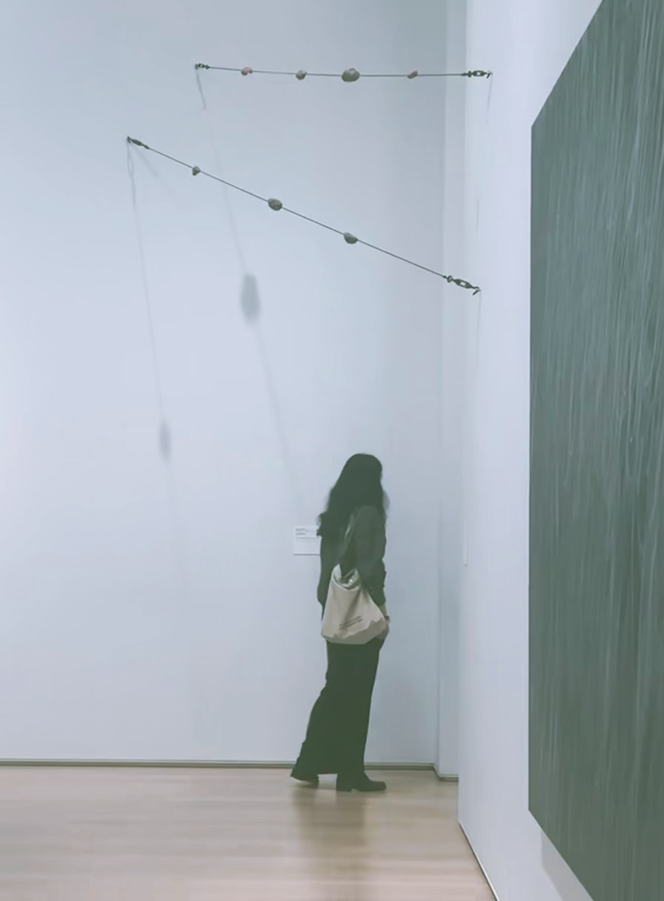

I'm a fourth-year student in Linguistics at the University of Chicago, with a minor in Computer Science. I'm interested in human and machine pragmatics, how information beyond literal meaning is communicated obliquely, and LLMs' capacities and shortcomings as social agents and companions, as well as in the psychological and social effects they may have on users through the mediation of language over long-term use. Ultimately, I hope to contribute to a society that treats the question of what coexistence we want with entities that appear alien and other to us, such as AI systems, with informed consideration and intentionality, supported by an understanding of how language shapes one's experience and perception of reality.
Currently, I'm working on a formal account of responses to speech acts that are relevant but do not address the at-issue topic, under the supervision of Prof. Chris Kennedy. I'm also conducting an interpretability project that aims to identify model components contributing to a language model's responsiveness to commissive acts (e.g. promises). Previously, I worked on the documentation of Dajing, a southern Wu language spoken in southeastern China, and assisted with research on cue weighting and language variation in the Phonology Laboratory directed by Prof. Alan Yu.
I'm based in Montreal, Canada. I also enjoy making art, (recreational) bridge, and Dostoevsky.
You can reach me at vzhang2 [at] uchicago [dot] edu.